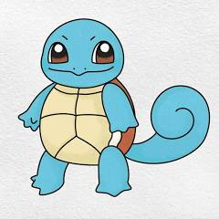

Squirtle is a small, light-blue Pokémon with an appearance similar to a turtle. With its aerodynamic shape and grooved surface, Squirtle's shell helps it wade through the water very quickly. It also offers protection in battle. Like turtles, Squirtle has a shell that covers its body with holes that allow its limbs, tail, and head to be exposed. Unlike a turtle, Squirtle is ordinarily bipedal. Its shell is highly sturdy, so it can hide within its shell to protect itself from physical attacks. It can also balance on it’s tail.Squirtle is usually well behaved, yet it has an underlying rebellious streak. It likes to be open with only a limited number of people and won't advertise its secrets. It prefers to stay within a close knit group, but can still enjoy making new friends. Other Pokémon may regard it as difficult and hard to get along with, but only if they have previously gotten on its bad side.